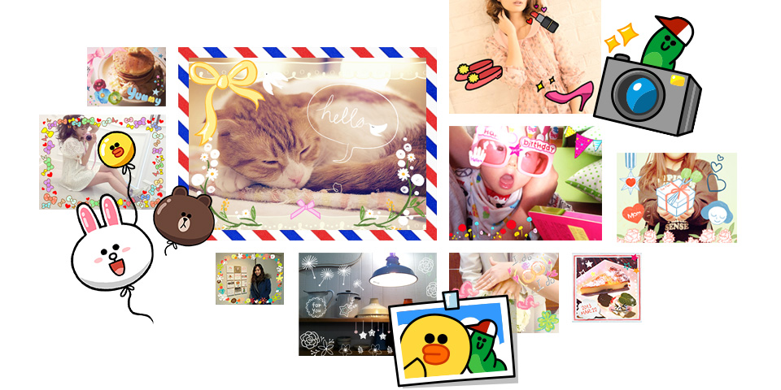
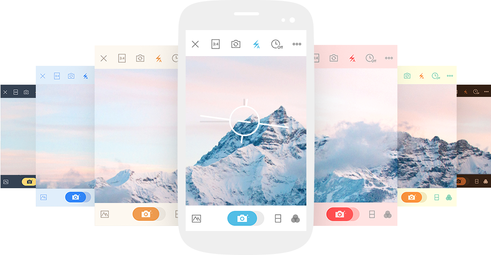
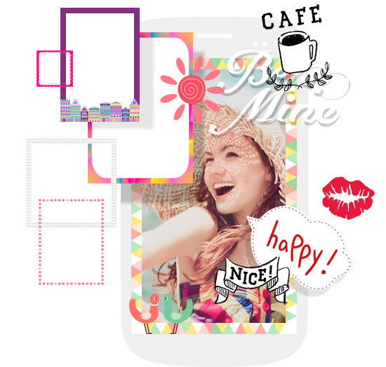
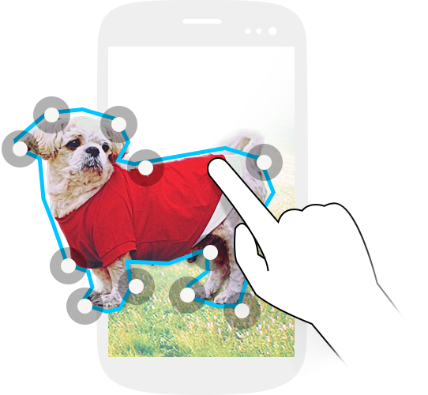
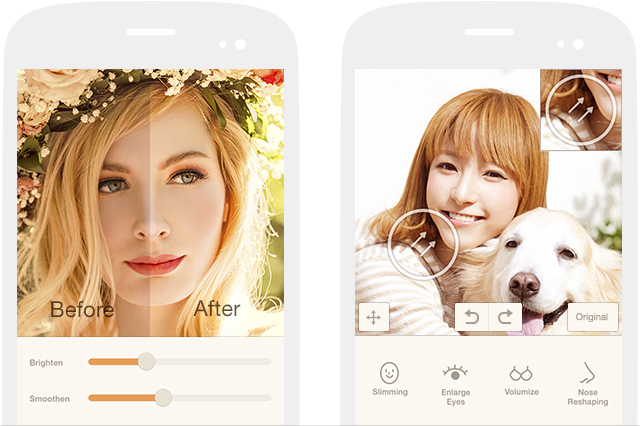
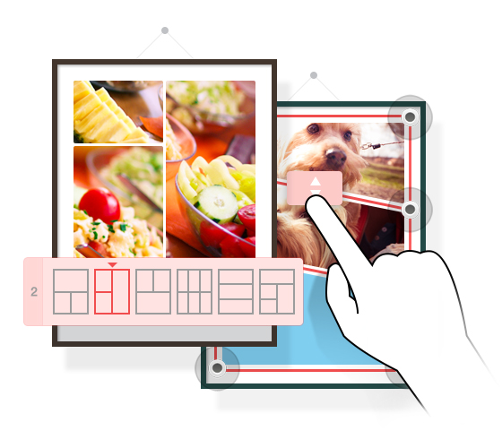
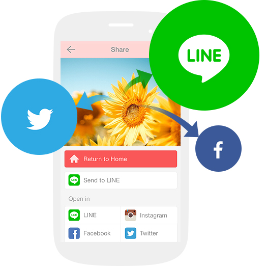

귀여운 손낙서, 세련된 드로잉, 위트 있는 캐릭터 등 다양한 스타일의 스티커 세트가 1000개 이상 준비되어 있습니다.
하루에 하나씩만 써도 3달 이상 쓸 수 있는 엄청난 양의 무료 프레임과 무료 폰트, 놓치지 마세요!
무료 아이템은 앞으로도 쭉~ 업데이트 됩니다.

다양한 컬러의 새로운 스킨으로
나만의 카메라 앱으로 꾸며보세요!


aillis 샵!
여러분의 사진을 조금 더 스페셜하게 꾸며 줄
특별한 아이템. aillis의 제안을
매주 샵에서 확인하세요!
여러분이 보고 있는 풍경에 분위기를 더해 줄 필터를 만나보세요. 필터의 디테일한 부분까지 조정할 수 있답니다.

똑같은 스티커는 가라! 세상에서 오직 하나뿐인
당신만의 스티커를 직접 만들어보세요.
여러분이 직접 그린 그림, 자주 사용하는 문구,
사진 중에서 좋아하는 부분만 잘라내서 스티커로
사용할 수 있어요.

피부를 환하고 매끈하게! 눈은 또렷하고 초롱초롱하게! 얼굴 라인의 미세한 부분까지 예쁘게 만들 수 있습니다.
자연스럽게 훈남훈녀가 되는 마법, 지금 라인 카메라 안에서 만나보세요.


사진을 한 장에!
콜라주
지정된 레이아웃에 여러 장의 사진을 넣거나,
커다란 도화지에 자유롭게 사진을 배치하는
방법으로 여러분만의 콜라주를 만들 수 있습니다.
틀의 두께와 선 및 배경의 색상까지도 자유롭게
꾸며보세요.
풀 스크린으로 화면 사이즈에 맞춰 촬영&편집하여 홈 화면을 꾸며보세요!
타이머 촬영 및 터치 촬영은 기본! 수평 수직을 정확하게 맞춰서 찍을 수 있도록 지원하는 그리드 표시 및 수평계까지. 전문적인 기능을 만나보세요.

-
편리한 타이머 촬영!
버튼을 누르고 카운트다운이 이어지는 동안
포즈를 취해보세요! -
손쉬운 터치 촬영
화면 어느 곳을 터치해도 사진을 찍을 수 있답니다.
촬영 버튼을 정확하게 누르기 어려울 때 사용해보세요~ -
그리드 표시/수평계 표시
탁 트인 바다를 정확한 수평에 맞춰 찍고 싶을 때!
라인 카메라를 이용하세요. 수직과 수평은 물론,
그리드 표시를 통한 화면의 전체적인 구도까지
맞출 수 있답니다.
라인은 물론, 페이스북 및 트위터 등 다양한
SNS에 사진을 간편하게 공유할 수 있어요.
